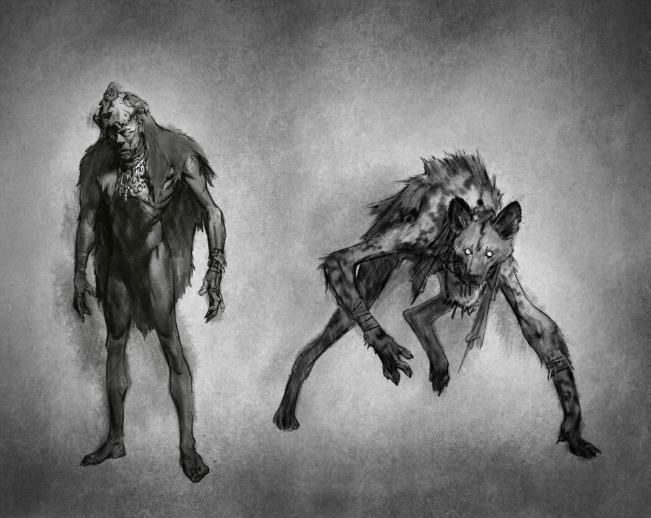

. >⋅⊲Ьכ are terrifying creatures, so terrifying that people won’t say their names. They have the uncanny ability to shapeshift much like other cryptic creatures but they are far more malicious in nature. It is believed that they are medicine men who abuse their power and abilities for evil reasons. It is also believed that anyone can become a skinwalker after committing a deep seated taboo. They are animalistic in nature even when they are in their more humanoid form. To add onto the horror, they are nearly impossible to kill except for a bullet of knife dipped in white ash. Finding information on these cryptids is difficult as many tribes dare not discuss them. If you encounter them, meeting them is not advised.
